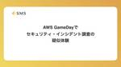

エス・エム・エス エンジニア テックブログ
https://tech.bm-sms.co.jp/
エス・エム・エスの開発組織、技術的取り組み、採用情報などを発信します
フィード

アジャイルチームでのQA活動が楽しかった話
エス・エム・エス エンジニア テックブログ
はじめに 介護/障害福祉事業者向け経営支援サービス「カイポケ」のQAを担当している星です。2020年1月に入社し、チーム活動やQA組織づくりを通じて品質保証の体制強化や施策推進をしています。 2024年も残すところあと半月ほど・・ということで、今回の記事では今年一年であった変化、その中で取り組んでみた活動の内の一つを振り返ってみたいと思います！ 組織、私個人としても沢山のチャレンジをさせてもらった一年ですが、印象深い活動をピックアップして書いてみています。 どんな変化があった？ カイポケのリニューアルプロジェクトでは今年からLeSS（Large Scale Scrum：大規模スクラム）の導入に…
5時間前

組織横断的なSRE活動を始めようとしています 35
35
エス・エム・エス エンジニア テックブログ
この記事は株式会社エス・エム・エス Advent Calendar 2024 vol.1の12月9日の記事です。 エス・エム・エスで全社SREというロールで活動しているSecurity Hub芸人1の山口（@yamaguchi_tk）です。 おすすめのAWSサービスは営業です（いつもお世話になっています）。 はじめに SRE（Site Reliability Engineering）は、運用の効率化とシステムの信頼性向上を目指すアプローチです。 私たち全社SREチームでは、組織横断的にSRE活動を開発チームにEnablingしていく取り組みを開始します。本記事では、その背景や目的、具体的に活動…
1日前

チーム交流のボードゲーム会の紹介
エス・エム・エス エンジニア テックブログ
この記事は株式会社エス・エム・エス Advent Calendar 2024 vol.2 12月9日の記事です。 介護/障害福祉事業者向け経営支援サービス「カイポケ」のソフトウェア開発者の 空中清高( @soranakk ) です。 本記事では、毎月開催しているチーム交流のボードゲーム会について書きます。 はじめに カイポケにはたくさんの開発チームがあります。 普段はリモートワークが中心だけど、「たまには他チームとの交流会がしたいな」ということで橋口( @gusagi ) さんがボードゲーム会を企画してくれました。 チーム交流のボードゲーム会は任意参加の会で、月に1回、だいたい月末の金曜日の夕…
1日前

社内外のコミュニティ的交流に取り組んでいる話
エス・エム・エス エンジニア テックブログ
この記事は株式会社エス・エム・エス Advent Calendar 2024 vol.2の4日目の記事です。 エス・エム・エス Engineering Manager 兼 Hiring Managerの @emfurupon777 です。 はじめに 入社してからずっと関わってきている社内外交流の観点でも継続することの重要さを改めて実感じているので、継続を意識して取り組んでいることについてポエムってみようと筆をとっています。 とはいえ、全部書いてもなーというところで、社内・社外向けの取り組み一つずつ取り上げてみます。社内はLT会、社外は協賛カンファレンスでのノベルティ提供(アイコン缶バッジ)につ…
5日前

キャリア事業データ基盤における権限管理の運用改善
エス・エム・エス エンジニア テックブログ
この記事は株式会社エス・エム・エス Advent Calendar 2024の4日目の記事です。 エス・エム・エス BPR推進部 データ基盤チームの橘と申します。 私は「ナース専科 転職」等のキャリア事業を中心に、社内のデータ活用の推進、データ基盤の開発運用を担当する、データエンジニアの役割を担っています。 はじめに キャリア事業のデータ基盤は、Google Cloud 上に、BigQuery を中心に構築しています。 近年、データ活用の需要はますます拡大し、事業部門がTableauやQuickSightなどのBIツールを介してデータ基盤を利用したり、Google スプレッドシートや BigQ…
5日前

保育士人材バンクの技術基盤改善 2024 1
エス・エム・エス エンジニア テックブログ
この記事は株式会社エス・エム・エス Advent Calendar 2024の12月4日の記事です。 qiita.com 保育士人材バンク のサービスを担当しておりますエンジニアの田実と申します。 保育士人材バンクは保育業界で働く方と事業所のための就職・転職マッチングサービスです。 本記事では2024年の保育人材バンクの技術基盤改善の取り組みを振り返っていきます！ コンテナ化 今年一番大きかった基盤改善は何と言ってもコンテナ化です！コンテナ化前はEC2上にアプリケーションがホスティングされており、デプロイはrsync、ログはSSHでサーバーに入って直接ログファイルを確認、といった運用を行ってい…
6日前

Unlearn Datadog, Relearn Datadog 1
エス・エム・エス エンジニア テックブログ
この記事は株式会社エス・エム・エス Advent Calendar 2024 および Datadog Advent Calendar 2024の4日目の記事です。 qiita.com qiita.com こんにちは、介護/障害福祉事業者向け経営支援サービス「カイポケ」のリニューアルプロジェクトでSREを担当している加我 ( @TAKA_0411 ) です。SREチームの中では主にモニタリングとオブザーバビリティに関する全般を担当しています。 エス・エム・エスでは複数のプロダクトを開発・運用しており、オブザーバビリティに関するサービスの選定についてはプロダクトの規模感や特性、ユースケースなどを考…
6日前

AWS GameDayでセキュリティ・インシデント調査の疑似体験
エス・エム・エス エンジニア テックブログ
この記事は株式会社エス・エム・エス Advent Calendar 2024の3日目の記事です。 qiita.com 介護・障害福祉事業者向け経営支援サービス「カイポケ」の開発をしているエンジニアの神谷です。先日、AWS GameDayに参加し、セキュリティ・インシデント調査の疑似体験をしてきましたのでその様子をレポートします。 AWS GameDayについて AWS GameDay はAWSが主催する、仮想的に用意された環境の中で、課題を解いて参加チーム間で成績を競うゲーム形式のセミナーです。 今回参加したGame Dayは、「セキュリティインシデント疑似体験」がテーマとなっており、典型的な…
7日前

カイポケリニューアルプロジェクトにおけるLeSS（大規模スクラム）導入
エス・エム・エス エンジニア テックブログ
スクラムマスターの貝瀬です。2024年6月から業務委託として、介護/障害福祉事業者向け経営支援サービス「カイポケ」に関わる組織やプロセスの改善を支援しています。 支援先の部門では、私が参画する以前よりカイポケリニューアルプロジェクトにスクラムをベースとした開発プロセスを導入していましたが、2024年8月にLeSS（Large Scale Scrum：大規模スクラム）を導入しました。今回はLeSSを導入することになった経緯と、導入の最初のステップを紹介したいと思います。 はじめに 本題に入る前に、私の略歴と、エス・エム・エスを支援することになったきっかけを紹介します。 私の経歴 現職の「合同会社…
14日前
オブザーバビリティ登壇マラソン：反復がもたらした予想外の収穫
エス・エム・エス エンジニア テックブログ
介護/障害福祉事業者向け経営支援サービス「カイポケ」のリニューアルプロジェクトでSREを担当している加我 ( @TAKA_0411 ) です。SREチームの中では主にモニタリングとオブザーバビリティに関する整備や調整を担当しています。 最近社外で登壇する機会がありまして、オブザーバビリティに関する内容の登壇をいくつかしてきました。同一テーマで複数回の登壇をするのが初めてということもあり、そこで得られたものや気付きについて振り返ってみたいと思います。 直近で登壇した / 登壇するイベント まずは直近登壇したイベントについてそれぞれ紹介していきます。 1. JAWS PANKRATION 2024…
21日前
入社3ヶ月の立場から見たカイゴジョブエージェント開発の現状と課題
エス・エム・エス エンジニア テックブログ
こんにちは、2024年8月にエス・エム・エスに入社した鈴木と申します。 入社エントリーかつ、現在担当しているカイゴジョブエージェントについてお話します。よろしくお願いいたします！ これまでの経歴 自社でWebサービスを提供している数社でエンジニアをやっていました。技術スタックとしては、オンプレミスサーバでPHP(Laravel、Zend、独自フレームワークなど)+jQuery+CSSといった組み合わせの時代のものから、AWS+React+Vite+TypeScript+Material UIといったものまで幅広く(浅く...とも言いますが)経験してきました。ログ調査や障害対応などの運用保守もや…
1ヶ月前
エス・エム・エス社員が語るコミュニティ活動：加我さん・山口さん対談
エス・エム・エス エンジニア テックブログ
こんにちは、エス・エム・エス テックブログ運営の大縄です。 今回は、同時期に SRE としてエス・エム・エスに入社した加我さん、山口さんによる、コミュニティ活動に関する対談記事をお届けします。 自己紹介 ——本日はよろしくお願いします。まずは自己紹介をお願いします。 加我さん： 私は 2024 年 4 月にエス・エム・エスに中途で入社しました。新卒では Java プログラマーとして中小の SIer に入社したんですが、色々と社内での調整があり、 QA エンジニアとしてキャリアをスタートしました。その中で、サーバーのミドルウェアの検証や評価計画を行う過程で OS のインストールやハードウェアの構…
1ヶ月前
10月29日-31日に開催される日本公衆衛生学会総会で筑波大学との共同研究の成果が発表されます
エス・エム・エス エンジニア テックブログ
10月29日（火）～31日（木）に北海道札幌市で開催される「第83回 日本公衆衛生学会総会」にて、筑波大学と弊社Analytics & Innovation推進部が共同で行っている研究の成果が発表されます。 学会の概要 日本公衆衛生学会は1947年（昭和22年）に設立された、公衆衛生分野での主要学会の1つです。会員数は9,000人を超え、社会医学分野でも最大規模となっています。 会員は行政､ 大学等の研究・教育機関、保健・医療・介護・福祉や職域の現場実践者、企業など多岐にわたり、毎年開催される学術大会（総会）には4,000人ほどが集まります。 大会名：第83回 日本公衆衛生学会総会 会期：20…
2ヶ月前
大規模プロジェクトにおける基盤の構成管理を開発状況に合わせて抜本的に見直した話
エス・エム・エス エンジニア テックブログ
はじめに こんにちは、エス・エム・エスの小笠原です。以前2つのカイポケSREチームを兼務している話を紹介しましたが、現在はカイポケリニューアル側のSREを担当しています。 今回は介護/障害福祉事業者向け経営支援サービス「カイポケ」の開発におけるSREの活動事例として、基盤の構成管理を抜本的に見直した話を紹介します。 リニューアルプロジェクトの概要 最初に私が関わっているカイポケリニューアルプロジェクトについて簡単に紹介します。 このプロジェクトは継続的な事業成長を目的としてサービスの安定性やプロダクトの優位性を高めることを目的とした「新カイポケ」の開発プロジェクトで、2021年に始動しました。…
2ヶ月前
強くてニューゲーム！大規模リプレースで次のレベルを目指す
エス・エム・エス エンジニア テックブログ
介護・障害福祉事業者向け経営支援サービス「カイポケ」の開発をしているエンジニアの神谷です。中途入社してから5年たった今、これまでの活動を振り返ってみようと思います。 入社以来、顧客への価値提供を素早くできるようにするため、開発環境のモダン化や技術的負債の解消にトライし続けてきました。 最初は小さなサブシステムのリプレースにチャレンジし、リプレースの大まかな流れやカイポケで抱えていた技術的負債の解消パターンなどを獲得していきました。 tech.bm-sms.co.jp 直近ではカイポケ障害児支援領域の大規模リプレースに関わってきました。今回この大規模リプレースでチャレンジしたことについて、技術的…
2ヶ月前
「Self-hosted GitHub Actions runners in AWS CodeBuild」を使ったバッチ実行基盤
エス・エム・エス エンジニア テックブログ
お疲れ様です、SREの西田 ( @k_bigwheel ) です。 最近、バッチ処理を実行するための新しい基盤を構築したので、この記事ではそれの紹介をしたいと思います。 少々前提の説明を丁寧にやりすぎてしまったので、作ったものをまず見たいという方は「構築したバッチ実行基盤のアーキテクチャ図と概要」の項目へジャンプしてください。 バッチ実行基盤とは バッチジョブ、バッチ処理のための仕組みは、多くのWebサービスで設けられていると思います。 とてもプリミティブなものであれば、Webアプリが動いているEC2インスタンス/コンテナにログインして rake task ... などを実行するパターンが典型…
2ヶ月前
介護業界の状況と課題、カイポケ開発組織でのドメイン知識への向き合い方をご紹介します！
エス・エム・エス エンジニア テックブログ
はじめに こんにちは、カイポケのリニューアルプロジェクトを担当しているプロダクトマネージャーの田村恵(@megumu_tamura)です。 カイポケが価値提供している介護業界は、日本をはじめとする多くの先進国で急速に進む高齢化社会に対応するために欠かせない分野です。しかし、介護業界に携わっていない方にとっては、まだまだ身近な存在ではないかもしれません。今回は、介護を少しでも身近に感じていただけるよう、介護業界の概要や課題についてお話ししたいと思います。 そもそも介護とは？ 少し想像してみてください。もし自分が年を重ね、日常生活の一部が難しくなったとき、誰に助けを求めますか？そして、どのような支…
2ヶ月前
Salesforce Developers Meetupに登壇してきました
エス・エム・エス エンジニア テックブログ
みなさんこんにちは！ エス・エム・エスでキャリア事業の基盤開発に携わっている川名と申します。 こちらの記事では2024/8/29（木）に開催されたSalesforce Developers Meetupにて登壇させていただいた内容をシェアしたいと思います。 発表テーマはSalesforceのCIとなります。 Salesforce導入時に技術者などがおらず、検証やデプロイ環境がレガシーな状態で運用されている環境も多いかと思います。 以前参加させて頂いたSalesforce Architect Group OsakaのMeetupで取られた参加者アンケートにおいてCIを使っているユーザはたしか2割…
3ヶ月前
SRE NEXT 2024に参加してきました！
エス・エム・エス エンジニア テックブログ
こんにちは、プロダクト推進本部人事のふかしろ(@fkc_hr)です。 8月2日、3日に開催されたSRE NEXT 2024に、エス・エム・エスのメンバーが参加してきました&弊社もGOLDスポンサーとして協賛いたしました。 sre-next.dev この記事では、メンバーの印象に残ったセッションの紹介・感想とブースの振り返りをお届けします！ みんなのイベント感想 山口（全社SRE） 全社SREの山口(@yamaguchi_tk)です。 SRE NEXT 2024のコアスタッフをしていました＆Snykさんのスポンサーセッションで登壇（DevSecOpsの内回りと外回りで考える持続可能なセキュリティ…
3ヶ月前
「Scrum Inc. 認定 アジャイル・テスティング研修」に参加してきたお話
エス・エム・エス エンジニア テックブログ
はじめに 介護事業者向け経営支援サービス「カイポケ」でQAを担当している中村です。先日、「カイポケ」に関わる開発エンジニア3名、QAエンジニア3名で「Scrum Inc. 認定 アジャイル・テスティング研修」に参加してきたので、その時のことを簡単にお話しします！ 参加の経緯や目的 私自身はこのイベントの存在を知っていたわけではありませんでしたが、同僚やマネージャーからの紹介と推薦により、会社の支援を受けて参加することになりました。もともとAgile Testingに関する少しの知見と強い興味を持っていたのですが、実践的なスキルを身につけることはもちろん、「組織に適用する方法を学ぶこと」や「組織…
3ヶ月前
Zenn Publication、始めました
エス・エム・エス エンジニア テックブログ
お疲れさまです、5月に入社しました西田 (@k_bigwheel )です。先日、エス・エム・エスの開発組織ではZennのPublicationというサービスを導入しました。この記事では、導入の背景と導入開始から完了までの経緯を紹介したいと思います。 Zenn Publicationとは Zenn Publicationとは、Zennというエンジニア向けナレッジ共有サービスの機能の一つです。 公式の紹介ページに「Zenn上にチームのメディアを開設しよう」とあるように、投稿した記事をPublicationという集合へ結びつけることで、企業や組織としての集まりを表現でき、ブランディングやPRに使えま…
3ヶ月前
社会課題の解決に興味を持ったエンジニアがエス・エム・エスに入社して思ったこと
エス・エム・エス エンジニア テックブログ
2024年4月にエス・エム・エスに入社した田実（たじつ）と申します。 この記事ではエス・エム・エスに入社した理由を経歴を踏まえて振り返りつつ、入社して思ったこと、これからやりたいことを紹介します。 これまでの経歴 1社目はSalesforceの導入・運用支援を行う会社でSalesforceエンジニアとして働いていました。 顧客折衝・要件定義・設計・開発・テスト・リリース・保守と、様々な業界のシステム開発に一気通貫で携わることができました。SalesforceだけではなくAWSやHerokuを使ったWebアプリケーション開発や外部サービス連携などの経験もでき、システム開発エンジニアとしての下地を…
3ヶ月前
カイポケリニューアルの品質保証の取り組みについて
エス・エム・エス エンジニア テックブログ
はじめに カイポケリニューアルプロジェクトでQAエンジニアを担当している北村です。 今回の記事では、2024年1月に入社した後、自身の所属チームで行ってきた品質保証関連の取り組みについてお伝えできればと思います。 エス・エム・エスの品質保証活動について興味がある方は是非目を通していただければ幸いです。 エス・エム・エスのQA組織の行動指針について エス・エム・エスのQA組織は「行動指針」という形で、QAエンジニアが大切にしている考え方を言語化しています。行動指針の詳細については、以前の記事で説明しておりますので是非ご覧ください。 tech.bm-sms.co.jp 今回の記事では、行動指針の一…
4ヶ月前
RubyKaigi 2024参加共有会を実施しました！
エス・エム・エス エンジニア テックブログ
先日開催されたRubyKaigi 2024にエス・エム・エスもスポンサーとして参加しました。 tech.bm-sms.co.jp 社内で「実際どんな感じだったか知りたい」という声があったため、参加しなかったメンバーへ向けてフリートーク形式の「RubyKaigi共有会」を実施しました。 そこで今回は、共有会で取り上げたトークテーマと実際のやりとりをかいつまんでご紹介できればと思います！ 今回ご紹介するトークテーマは以下の4つです。 参加した目的について セッションについて ブースについて #kaigieffect*1について トークテーマ「参加した目的について」 "RubyKaigiに参加する目…
4ヶ月前
Findyさん主催のイベントで「継続性視点での開発生産性マネジメント」について発表しました
エス・エム・エス エンジニア テックブログ
エス・エム・エスで開発組織のマネージャーをしている @sunaot です。余談ですが、このブログでは名乗るときにいくつかの言い方を過去にしていて、「技術責任者」「技術組織のマネージャー」なども名乗っています。面接の場では「プロダクト組織のマネージャー」と言っていたりもします。これは次々肩書きが変わっている...というわけではなく、どれもロールとしてはやっているので、そのときのコンテキストで一番適切なものを名乗っていました*1。今回は、開発組織のマネージャーとしての側面から話すのが適切でしょう。 さて、5月28日に開催されたファインディ株式会社主催のイベントで、「継続性視点での開発生産性マネジメ…
4ヶ月前
ADRはじめました
エス・エム・エス エンジニア テックブログ
こんにちは！夏ですね。@kimukei です。 今回は、弊プロジェクトのカイポケリニューアルで ADR を導入しましたというお話です。 ADRとは、「Architecture Decision Record」または、「Architectural Decision Records」の略でアーキテクチャ上で重要な決定を記録するドキュメントです。 詳しくは「DOCUMENTING ARCHITECTURE DECISIONS」 や「Architectural Decision Records」をご覧ください。 また ADR については、以前弊社の酒井が登壇したイベントでも触れられておりますので、こち…
5ヶ月前
エス・エム・エスは SRE NEXT 2024 をすごく楽しみにしています！
エス・エム・エス エンジニア テックブログ
こんにちは、プロダクト推進本部人事のふかしろ(@fkc_hr)です。今年のSRE NEXTでGOLDスポンサーをし、当日はブースも出す予定です。 sre-next.dev エス・エム・エスには複数のSREチームがあり、様々な方とお話をできればと楽しみにしています。 今回は事前に一部メンバーから気になるセッションの紹介とブースでプレゼントできる缶バッジのご案内をいたします。 気になるセッション共有 大きな組織にSLOを導入し運用するということ、その難しさ カイポケSREチームの加我です。 サービスの信頼性の計測においてSLI/SLOを利用するというプラクティスはSREであれば多くの人が知っている…
5ヶ月前
フロントエンド開発4年目を迎えた今、受託開発企業から自社開発企業に転職して思ったこと
エス・エム・エス エンジニア テックブログ
はじめに 2024年4月にエス・エム・エスに入社した泉澤です。現在、介護事業者向け経営支援サービス「カイポケ」のフルリニューアルプロジェクトに携わり、フロントエンドエンジニアとして機能開発を行っています。 careers.bm-sms.co.jp まだ入社して3ヶ月ではありますが、今までの経歴や転職した背景などに触れ、入社して感じた前職との違いや、この3ヶ月をどのように過ごしてきたかを振り返っていこうと思います。現在転職を考えている方や、エス・エム・エスに興味を持っている方の参考になれば幸いです。 今までの経歴と転職した背景 新卒でITメーカーに入社し、1年間法人営業を担当していました。当時は…
5ヶ月前
カイポケ障害児支援領域のリプレースで実施したドメインモデリング
エス・エム・エス エンジニア テックブログ
はじめまして、介護事業者向け経営支援サービス「カイポケ」 のエンジニアの大縄です。 本記事では、カイポケの障害児支援領域のリプレースで実施したドメインモデリングについて、実際のドメインを題材にどのように実施したかを紹介させていただきます。 ドメイン駆動設計を参考に実施しているところもありますので、ご興味のある方の参考になれば幸いです。 リプレースの背景 障害福祉の制度は概ね 3 年に 1 度改定されます。プロダクトも新制度に追従していく必要があるのですが、制度が複雑であり開発日程もタイトであることから、プロダクトの仕様やコードベースを最適化することを犠牲にした結果、仕様が複雑化し、それに引きづ…
5ヶ月前
Google Chromeで素早くAWSマネージメントコンソールの特定のサービスページを開く方法
エス・エム・エス エンジニア テックブログ
こんにちは！ 5月に株式会社エス・エム・エスへ入社しました、SREの西田和史です。 今日はAmazon Web Services（以下AWS。各サービス名も一般的な略称で表記します）周りのTipsを共有します。 解決したい課題 AWSマネージメントコンソールで特定のサービスのページを開こうとすると、たくさんのサービスがあることもあり結構手間がかかります。 よく使うサービスはホーム画面にリストで表示されていますが、リストの順番は毎回変わりますし、 検索機能も使いにくく、「ECR」など妥当なキーワードでも対応するサービスが出てこないこともあります。 解決策 Google Chromeのサイト内検索…
5ヶ月前